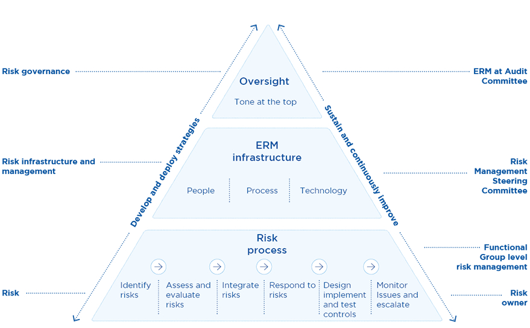

Stewardship
Risk Management


Enterprise Risk Management (ERM)
The present context of a highly competitive and volatile business environment, market saturation of telecommunication operators, OTT Players, fast-changing technology, and economic uncertainties is exerting pressure on business operations. Hence, it is vital for an organisation to foresee business-critical risks and manage them effectively. Having considered the importance, the Board of Directors (BOD) has given directions to implement effective risk management processes across the Organisation. Complying with the Board’s direction, SLT developed the Enterprise Risk Management (ERM) process and ERM framework. References have been made to ERM best-practices such as ISO 31000 and COSO, and due guidance has been obtained from Messrs Deloitte in this regard. SLT has started to identify and manage its functional risks in day-to-day business activities with implementation of the ERM process. Therefore, a risk management culture is inculcated within the Organisation.
A formal process for reporting risks to the Board was introduced with the aim of enhancing and driving the ERM process. In order to support this process, a Risk Management Steering Committee (RMSC) was formed under the chairmanship of the Group CEO. This was to aid analysis of any escalated risks from functional groups and to identify key business-critical risks. Further, the ERM process has been extended to our subsidiaries including Mobitel, and the Board reviews Group risks at the Audit Committee meeting.
Risk management has now reached maturity at both functional units and project management and it has become an important (BAU) process. It encourages Senior Executives to embed the risk management process into functional units. This has empowered them to take appropriately calculated positive risks (rewarded risks) and accept, mitigate, avoid, or transfer any negative risks (unrewarded risks). The figure below illustrates the organisation of the ERM and its responsibilities with relevant groups.
Risk management framework

Given below is a summary of top business-critical risks; both industry-specific and company-specific with a brief description of each risk,
their potential impact, and actions taken to mitigate them.
Financial risks
The main risks arising from our financial assets and liabilities are foreign exchange fluctuations, fund management, and increased operating costs. Financial markets continue to be volatile and this may heighten execution risk for funding activities and credit risk premiums for market participants.
Exposure to foreign exchange fluctuations
Telecommunication operators in Sri Lanka collaborate with international vendors in obtaining services for telecommunication system implementation and maintenance, in addition to procuring hardware and software applications inclusive of telecommunication systems. Thus, a significant portion of our capital expenditure and operational expenditure is incurred in foreign currencies, leading to foreign exchange translation losses.
The significant depreciation of the Sri Lankan rupee during the year had a huge impact on the Company’s business and industry activities as well. We are consistently working on improving foreign currency inflows from our services provided to international operators. Through this we are establishing a natural hedge to minimise our exposure to foreign exchange fluctuations. Furthermore, we explore the possibility of limiting non-business critical capital expenditure and other liabilities to control cash outflows in terms of foreign currencies.
Escalating operating costs
Intense price competition among the competitors has compelled operators to maintain low profit-margins despite increasing operational expenditure. Increase of consumers’ power and low switching cost has pressurised operators to invest in unique product features while also offering discounts and promotions, further cutting down profits.
As the largest wire-line telecommunication operator in Sri Lanka, our operation and maintenance cost on services provided to domestic customers is significant. We strive to provide the best after-sales service while keeping our operational cost low through continuous improvements (Kaizen) of business process, business process re-engineering, and efficient utilisation of human resources.
Economic risks
Changes in domestic, regional, and global economic conditions may have a material adverse effect on the demand for elecommunications, digital services, and information technology (IT) and related services, and hence, on our operations and financial performance. Economic headwinds that prevailed in the previous year leading to uncertainties in the macroeconomic environment diminished by the latter part of the year.
Taxation
The Government’s heavy taxation policy on telecommunication services adversely impacts the business of the Company. Government has revised the financial levies imposed on telecommunication services by reducing the telecommunication levy from 25% to 15% in order to improve the affordability of the service. However, Value Added Tax (VAT) of 15%, Nation Building Tax (NBT) of 2% and CESS levy of 2% continue to be imposed on telecommunication services. In addition, International Telecommunication Levy and IDD levy are applied on international services. Since the burden of such levies and taxes are passed on to the consumer, demand and usage of telecommunication services could be adversely affected in a critical manner.
We, Sri Lanka Telecom including our mobile arm, Mobitel are cognisant of the price sensitive nature of our customers and take proactive measures to prevent such potential revenue losses.
Regulatory and legal risks
We are exposed to the risk of regulatory or litigation action by regulator and other parties. Our operations, aligned with the Government’s vision for good governance, are subject to regulatory conditions, and various other laws and regulations, such as those relating to customer data privacy and protection, anti-bribery and corruption, and workplace safety and health.
Regulatory risks on license conditions
Telecommunication businesses require licenses issued by the Sri Lanka Telecommunication Regulatory Commission under the Telecommunication Act. Failures to meet regulatory requirements are liable to fines or other sanctions including litigation. Furthermore, such licenses, either right to access to a band of spectrum, or right to use a particular access technology secured by us, provide a competitive advantage in business. Violation of license conditions or exploitation beyond the authorised scope of licenses by some operators create unfair competition in the market including call bypass, and may affect our business and/or our capacity to operate in line with our business objectives.
We closely work with our partners in the business to comply with regulatory requirements. We closely monitor new developments in the regulatory framework and regularly participate in discussions and consultations with respective regulatory authorities and the industry to propose changes and provide feedback on regulatory reforms and developments in the telecommunications and media industry.
Legal risks
We are exposed to the risk of regulatory or litigation action by regulators and other parties. Examples of such litigation are disclosed in Notes to the Financial Statements under “Contingent Liabilities”.
Refer Note 32 to the Financial Statements.
Information security risks
In this information society, Organisations’ systems and data are crucial for business continuity. Loss of sensitive information or any data breach may lead to loss of competitive advantage and loss of customer confidence. DDOS attacks, malware, and other cyber-attacks may damage Company systems and Company reputation. During the year, several ransom-ware attacks and hacking incidents were reported globally. Unfortunately, such cyber-security incidents are becoming more and more common, increasing in frequency and intensity, and the need for enhanced levels of sophistication in information security systems is emphasised.
Cyber security and information security
As our businesses and operations rely heavily on information technology, we have established an Information Security Management System (ISMS) within the Organisation. This ensures internal audits and activities such as vulnerability assessment of critical services, penetration testing, compromise assessment, and security architecture review are conducted on a regular basis to ensure compliance with ISO 27001 standard. Remedial actions are taken for identified vulnerabilities.
Business risks
As we move into new growth areas in ICT to create additional revenue streams through products and solutions such as OTT applications, managed services, cloud services, infrastructure services, cyber security, IOT services, data analytics, and digital services, it alters the business model.
New businesses place new demands on people, processes, and systems. We respond by continually updating our organisation structure, reviewing our human resource recruitment, training and development plan, reviewing our policies and processes, and by investing in new technologies to meet changing needs.
Human resource management and transformation
Organisational cultural and mindset change will be a primary factor in transforming the incumbent telecommunication operator in Sri Lanka to adopt innovative business models which require creativity as we seek new avenues of growth.
A golden handshake scheme was introduced to improve productivity of the Organisation and control the increase in cost of staff salaries and wages. Attracting and sustaining talent including new skills and capabilities, amidst the retirement of a significant number of experienced staff during the forthcoming years is a challenge to us. We are in the process of preparing a five-year training and development plan aligning with the organisational five-year strategic plan. Necessary project related trainings are offered to employees to enhance their technical skills and update themselves with the latest technologies. Further out-bound training opportunities, foreign trainings, and soft-skill enhancement programmes are offered to enhance employee motivation. We are consistently focused on making Sri Lanka Telecom a great place to work.
Threat from Over the Top (OTT)
Over-The-Top (OTT) applications are increasingly becoming a threat to traditional voice and data revenues of telecommunication operators especially international on-net traffic, as consumers from generation Y and millennials are more comfortable with social networking and communication over internet platforms rather than traditional communication channels. Although OTT applications tend to reduce traditional voice revenue, it also becomes complementary to high broadband adoption and increased usage. We are developing a series of OTT applications to realise this opportunity.
Threat from competitors
The telecommunication industry in Sri Lanka is nearly saturated due to the existence of several telecommunication operators. In addition to competition among those traditional telecommunication operators, non-traditional competitors such as Over-The-Top (OTT) players have entered the market, flooding the market and creating intense competition. Competition in the domestic market has broadened to the international market.
We strive to create a unique value proposition for our customers and win their loyalty through continuous product feature enhancements, product-line extensions, and product bundling offers, and through our novel products based on Internet of Things (IOT) and connected devices. eSports events, robotics/machine-to-machine based new technology campaigns, and location-based product campaigns exhibit our capabilities, and our team is well-equipped in developing even more innovative products. Identifying the need, the Organisation structure has been restructured to develop digital products catering to market requirements.